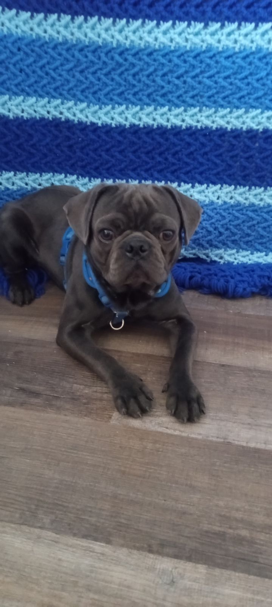
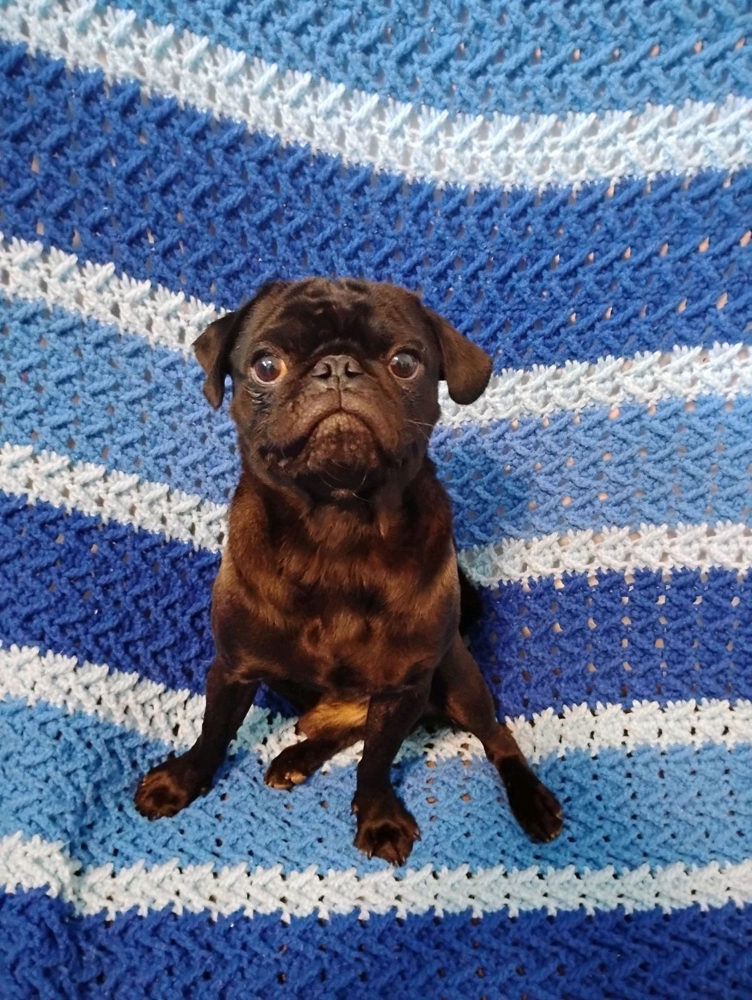

KEEVAH
Keevah is one of the lovely females in our kennel. She's a beautiful girl with a striking coat of chocolate and tan points- taking after her father, Turbo, and an incrediblly sweet temperament. Keevah is a true family dog- she loves nothing more than lounging around with us and soaking up all the belly rubs she can get! Smart and affectionate, she brings a lot of joy and warmth to our lives.
BEEFY
Meet Beefy, the proud stud of our kennel! Full of energy and always eager for outdoor adventures, Beefy is a natural leader who loves to play with the other dogs and keep everyone in line. Known for his bold personality, he isnt shy about letting his voice be heard- especially when he wants something! Handsome and full of charm, Beefy was recently reatured in Paw Print Magazine's calendar, and it's easy to see why. He's a standout, both in looks and spirit!
DOZER
Our boy Dozer, our playful and spirited boy! Hes a bundle of energy who keeps us laughing with his quirky antics- especially when hes on "bubble patrol," determined to protect the family from those mysterious floating invaders. Dozer is a unique blend of calm and high energy, bringing a bit of mischief to every day. Always keeping us on our toes, he's a lovable handful who fills our lives with joy and adventure!